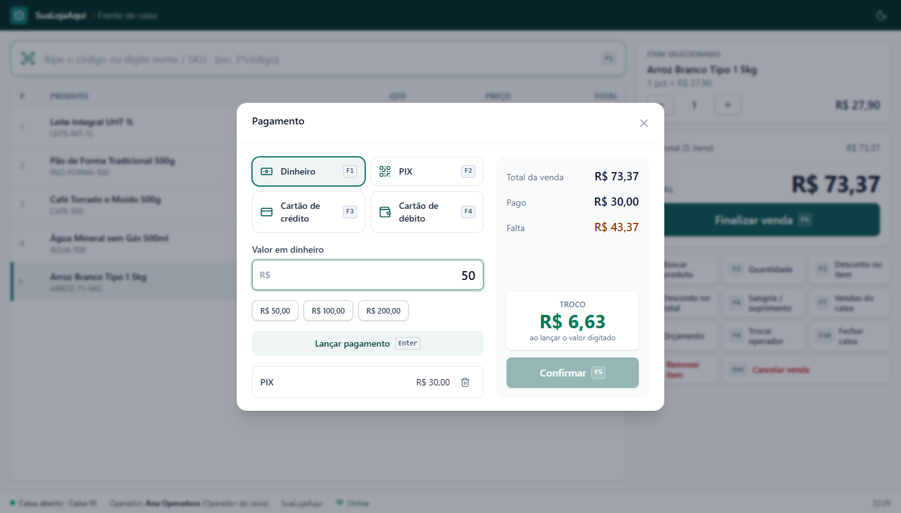

SuaLojaAqui
Manual do Usuário — Frente de caixa (PDV não fiscal) e gestão de estoque
Instalação · Caixa · Estoque · Gerência · Administração

O SuaLojaAqui junta duas coisas num só sistema:
Ele roda no navegador (Edge, Chrome), num computador da loja que funciona como "servidor". Os outros caixas, o computador do escritório, tablets e celulares da mesma rede acessam esse computador.
Cada funcionário tem o próprio usuário. O perfil define o que ele pode fazer:
| Perfil | O que faz |
|---|---|
| Operador de caixa | Abre e fecha o caixa, vende, consulta produtos e reimprime comprovantes do turno. Ao entrar, cai direto na tela do caixa. |
| Gerente | Tudo do operador, mais: dá descontos sem limite, cancela vendas, faz sangria/suprimento, autoriza essas ações para o operador e vê os relatórios de vendas e caixas. |
| Estoquista | Cadastra produtos e preços, registra entradas e saídas, cuida das solicitações de pedido e dos relatórios de estoque. |
| Administrador | Acesso total: usuários, configurações da loja, ajustes de estoque, lixeira e auditoria. |
| Termo | Significado |
|---|---|
| Bipar | Passar o produto no leitor de código de barras. |
| Cupom | A lista de itens da venda que está sendo feita no caixa. |
| Terminal | Cada computador de caixa (ex.: "Caixa 01"). |
| Turno / caixa aberto | Período entre a abertura e o fechamento do caixa de um terminal. |
| Troco inicial | Dinheiro colocado na gaveta ao abrir o caixa (fundo de troco). |
| Sangria / suprimento | Retirada / colocação de dinheiro na gaveta durante o turno. |
| PIN | Senha curta, de 4 a 6 números, pessoal de cada usuário. |
| SKU | Código interno do produto (ex.: ARROZ-T1-5KG). |
Este capítulo é para quem vai instalar o sistema no computador principal da loja. Faz-se uma vez só.
| Item | Detalhe |
|---|---|
| Computador principal | Windows 10 ou 11, 4 GB de memória ou mais, 2 GB livres no disco. Ele precisa ficar ligado enquanto a loja usa o sistema. |
| Node.js | Versão 22 ou mais nova (LTS). Baixe em https://nodejs.org e instale clicando em "Avançar" até o fim. |
| Os arquivos do sistema | A pasta do projeto (por download do GitHub ou cópia). Não coloque o banco de dados dentro do OneDrive — o sistema já guarda os dados fora dele, em %LOCALAPPDATA%. |
| Navegador | Microsoft Edge ou Google Chrome atualizados. |
| Opcional | Leitor de código de barras USB (funciona como teclado, sem configuração), impressora térmica e gaveta de dinheiro. |
Não é preciso instalar banco de dados: o PostgreSQL já vem junto com o sistema.
cmd, Enter) e rode node -v. Deve aparecer algo como v24.x.x.cd "C:\Users\SEU-USUARIO\Documentos\projeto"
npm.cmd run setupEla instala tudo, cria o arquivo de configuração
apps\api\.env com senhas aleatórias, cria o banco de dados e o usuário admin. No final aparece a senha provisória do admin — anote.npm.cmd run db:demo -w @vl/api
npm.cmd run build
iniciar-sistema.bat da pasta. Uma janela preta chamada SuaLojaAqui abre e, em seguida, o navegador em http://localhost:3000.npm pode dar o erro "a execução de scripts foi desabilitada neste sistema". Escrever npm.cmd evita o problema. Se preferir liberar o npm de vez, rode uma vez no PowerShell:
Set-ExecutionPolicy -Scope CurrentUser RemoteSignede responda S. Usar o Prompt de Comando (cmd) em vez do PowerShell também resolve.
| Ação | Como fazer |
|---|---|
| Ligar | Dois cliques em iniciar-sistema.bat. Aguarde o navegador abrir (uns 10 segundos). |
| Desligar | Feche a janela preta SuaLojaAqui. O banco de dados é desligado com segurança. |
| Abrir de novo no navegador | Digite http://localhost:3000 (ou use o favorito). Dica: crie um atalho na área de trabalho. |
| Ligar junto com o Windows | Tecla Windows + R, digite shell:startup, Enter, e coloque nessa pasta um atalho para o iniciar-sistema.bat. |
cmd e rode ipconfig. Anote o "Endereço IPv4" da rede da loja (ex.: 192.168.0.9).http://192.168.0.9:3000.| Mensagem / sintoma | Solução |
|---|---|
| "a execução de scripts foi desabilitada" | Use npm.cmd no lugar de npm (veja a dica do item 2.2). |
| "Node.js não encontrado" | Instale o Node.js e feche e abra o Prompt de Comando. |
P1000: Authentication failed (senha do banco) | O arquivo apps\api\.env tem uma senha diferente da do banco que já existe no computador. Use o .env antigo ou, para começar com um banco novo, preencha DB_DATA_DIR no .env com uma pasta nova (ex.: C:/Users/SEU-USUARIO/AppData/Local/sualoja/pgdata) e rode de novo npm.cmd run db:deploy -w @vl/api e npm.cmd run db:seed -w @vl/api. |
| "a porta 3000 já está em uso" | O sistema já está ligado em outra janela. Feche a janela antiga ou use a que já está aberta. |
Página não abre em localhost:3000 | Confira se a janela preta está aberta e sem erro em vermelho. Espere 20 segundos e atualize (F5 fora do caixa). |
| Esqueci a senha do admin inicial | Ela está no arquivo apps\api\.env, na linha ADMIN_INITIAL_PASSWORD (só vale para o primeiro acesso). |
http://localhost:3000, digite o usuário admin e a senha provisória anotada na instalação.
Menu Administração → Configurações → Identidade da loja:
#0F766E). Todo o sistema se adapta à cor.Clique em Salvar alterações no topo da página.

Ainda em Configurações, no quadro Impressão, escolha o papel (bobina 80 mm, 58 mm ou A4) e a conexão. Depois de salvar, use Imprimir página de teste. Os detalhes de cada tipo de impressora estão no capítulo 9.

| Configuração | Para que serve |
|---|---|
| Desconto máximo do operador sem autorização (%) | Até esse percentual, o operador dá desconto sozinho. Acima, um gerente precisa autorizar com o PIN. Use 0 para exigir autorização em qualquer desconto. |
| Bloquear venda de item sem estoque | Desligado (padrão): o caixa vende e só avisa que o estoque está zerado — afinal, o produto está na mão do cliente. Ligado: o caixa não deixa vender. |
| Segurança: PIN | Escolha quais operações de estoque pedem o PIN do funcionário. |
Menu Administração → Usuários → Novo usuário. Informe nome, login, perfil, uma senha provisória e o PIN. No primeiro acesso, o funcionário troca a senha.

Menu Estoque → Categorias. O sistema já vem com categorias de mercadinho e padaria; crie, renomeie ou exclua conforme a sua loja. São dois níveis: categoria (ex.: Bebidas) e subcategoria (ex.: Refrigerantes).
Menu Estoque → Produtos → Novo produto:
| Campo | Como preencher |
|---|---|
| Nome | Como o cliente conhece o produto, com marca e tamanho. Ex.: Arroz Tio João Tipo 1 5kg. |
| SKU | Código interno, sem espaços. Ex.: ARROZ-TJ-5KG. Também serve para vender no caixa. |
| Código de barras (EAN) | Clique no campo e bipe a embalagem. Produtos sem código (pão, frios) podem ficar sem — vendem pelo SKU ou pelo nome. |
| Categoria e unidade | A unidade define como o produto é vendido: UN, KG (por peso), L, CX, PCT... |
| Preço de venda | O valor cobrado no caixa. Sem preço o produto não pode ser vendido no caixa. |
| Preço de custo | Quanto você paga. Usado para calcular a margem nos relatórios. |
| Estoque inicial | Quantidade que já existe na loja hoje (só no cadastro). |
No fim do formulário há o interruptor "Controlar consumo e reposição":


A frente de caixa ocupa a tela inteira e funciona toda pelo teclado (as teclas aparecem nos botões, que também podem ser tocados em telas touch). O operador de caixa entra direto nela; os demais perfis acessam pelo menu Operação → Frente de caixa.

3*7891234567890 ou 3*AGUA-500.
0,455 kg.



Ao confirmar, aparece Venda concluída com o número da venda e o troco em destaque. Escolha Imprimir ou PDF, e Esc para a próxima venda. Se a impressão automática estiver ligada nas configurações, o comprovante sai sozinho.


Orçamento (F8): com itens no cupom, gera um orçamento em A4 para imprimir ou em PDF para enviar ao cliente. Não é venda e não baixa estoque. Depois, cancele o cupom com Esc ou finalize a venda se o cliente fechar negócio.


F7 mostra as vendas do caixa aberto. Clique numa venda para ver os itens e:


Na troca de turno ou no intervalo, o próximo operador digita o usuário e o PIN. O caixa continua aberto; as vendas seguintes ficam no nome do novo operador. A troca só é permitida com o cupom vazio.


Se a rede cair (ou o computador principal ficar fora do ar), o caixa continua vendendo: o rodapé mostra "Offline — vendendo neste computador" e cada venda é guardada no próprio computador do caixa, com comprovante impresso normalmente (marcado "OFFLINE", o número sai depois).
Quando a conexão volta, as vendas são enviadas sozinhas, sem duplicar, e o estoque é baixado. Você pode forçar o envio clicando em "N venda(s) aguardando envio" no rodapé.
| Tecla | Ação |
|---|---|
| F1 | Ir para a busca de produto |
| F2 | Alterar quantidade do item selecionado |
| F3 / F4 | Desconto no item / no total |
| F5 | Finalizar venda (no pagamento: confirmar) |
| F6 | Sangria / suprimento |
| F7 | Vendas do caixa (reimprimir, cancelar) |
| F8 | Orçamento (A4 ou PDF) |
| F9 | Trocar operador |
| F10 | Fechar caixa |
| Del | Remover item selecionado |
| Esc | Fechar janela aberta ou cancelar a venda |
| ↑ ↓ + − | Selecionar item · aumentar/diminuir quantidade |
3*código | Lançar 3 unidades de uma vez |
| No pagamento | F1 Dinheiro · F2 PIX · F3 Crédito · F4 Débito · Enter lança o valor |
As vendas do caixa já baixam o estoque sozinhas. As telas deste capítulo são para o que não passa pelo caixa.
Menu Operação → Registrar entrada. Escolha o tipo (Pedido recebido ou Retorno ao estoque), bipe o produto, informe a quantidade (e a nota/fornecedor na observação) e confirme. Pode pedir o seu PIN.

Registro rápido: com a opção ligada, cada bipagem registra 1 unidade na hora — útil para conferir uma caixa item a item.
Menu Operação → Registrar saída, tipo Perda / quebra / vencimento. Use para produtos estragados, quebrados ou vencidos. Vendas não devem ser lançadas aqui — elas passam pelo caixa.
Menu Estoque → Movimentações: histórico completo de entradas e saídas, com filtros por tipo, direção e período. As vendas aparecem como Venda e os cancelamentos como Estorno de venda cancelada.

Quando um produto com reposição ligada chega ao ponto de pedido, o sistema cria uma solicitação com a quantidade sugerida. Em Estoque → Solicitações de pedido, a gestão acompanha o fluxo:
Pendente → Pedido feito (pedido enviado ao fornecedor) → Recebido (registre também a entrada da mercadoria). Também é possível criar solicitações manuais e imprimir a lista para o fornecedor.

Menu Estoque → Relatórios: movimentação por produto no período, estoque parado (sem saída) e rupturas (sem saldo). Exporta para Excel (CSV) e imprime.
Produtos excluídos ficam na lixeira pelo prazo configurado (padrão 15 dias) e podem ser restaurados. Depois disso são apagados — exceto os que têm vendas, que ficam guardados para sempre.
Menu Vendas → Vendas. Escolha o período (Hoje, 7 dias, 30 dias ou datas personalizadas) para ver:
Mais abaixo fica a lista de vendas: pesquise pelo número do comprovante ou filtre canceladas. Clique numa venda para reimprimir, gerar PDF ou cancelar. O botão Exportar CSV abre no Excel.

Menu Vendas → Caixas: todos os turnos, com quem abriu e fechou, o dinheiro esperado, o contado e a diferença (falta em vermelho, sobra em amarelo). Reimprima ou baixe em PDF o relatório de qualquer fechamento.

A tela inicial mostra as vendas de hoje (para gerente e administrador), os alertas de reposição e as últimas movimentações.

Menu Administração → Usuários. Pelo menu "⋯" de cada usuário: editar (nome e perfil), redefinir senha (provisória, trocada no próximo acesso), redefinir PIN e desativar.

Menu Administração → Auditoria: registro de quem fez o quê e quando — logins, vendas, descontos (e quem autorizou), itens removidos do cupom, cupons cancelados, cancelamentos de venda, sangrias, abertura de gaveta, reimpressões, cadastros, exclusões e mudanças de configuração.

apps\api\.env contém as senhas internas do sistema: não envie a ninguém e não coloque em pastas compartilhadas.Os dados ficam no computador principal, na pasta indicada em DB_DATA_DIR no arquivo .env (padrão: %LOCALAPPDATA%\vl-estoque\pgdata).
apps\api\.env (sem ele, o banco copiado não abre).O sistema imprime comprovante de venda, orçamento, sangria/suprimento e fechamento de caixa. Configure em Configurações → Impressão.
"C:\Program Files (x86)\Microsoft\Edge\Application\msedge.exe" --kiosk-printing --app=http://localhost:3000/caixaO comprovante sai direto na impressora padrão do Windows (defina a térmica como padrão). Feche todas as janelas do Edge antes de usar o atalho pela primeira vez.
Gaveta de dinheiro na USB: a gaveta ligada à impressora é aberta pelo driver — procure a opção "abrir gaveta" / "cash drawer" nas preferências da impressora no Windows.
Nesse modo a impressão é imediata, sem janela. Se a impressora não responder, o sistema avisa e imprime pelo navegador.
Escolha Papel: Folha A4 para comprovantes detalhados em impressora jato de tinta/laser. O orçamento sai sempre em A4. Em qualquer tela de comprovante, o botão PDF gera o arquivo (funciona até sem internet).
| Situação | O que fazer |
|---|---|
| O leitor de código de barras não lança o produto | Clique no campo de busca do caixa (ou tecle F1) e bipe de novo. Teste o leitor no Bloco de Notas: ele deve "digitar" o código e pular a linha. |
| "Nenhum produto com o código..." | O código não está cadastrado. Cadastre o produto (ou acrescente o código de barras ao cadastro existente). |
| "O preço de X mudou para R$ Y" | O preço foi alterado depois que o item entrou no cupom. Remova o item (Del) e bipe de novo. |
| Desconto pede autorização | O desconto passou do limite do operador. Um gerente digita usuário e PIN na janela que abriu. |
| "Este caixa já foi fechado" | O caixa foi fechado em outro lugar. Abra um novo caixa. |
| Não consigo fechar o caixa | Há vendas offline pendentes. Verifique a conexão e clique em "aguardando envio" no rodapé. |
| Uma venda offline ficou com erro | Avise o administrador: a mensagem aparece junto da venda pendente. Normalmente é um produto excluído ou um caixa fechado antes do envio. |
| Diferença no fechamento do caixa | Confira as sangrias e suprimentos do turno (F7 / relatório do caixa), os trocos e se alguma venda foi lançada na forma de pagamento errada. A diferença fica registrada no histórico de Caixas. |
| O comprovante sai cortado ou com margem | Na janela de impressão do navegador, escolha Margens: nenhuma e o papel da bobina. Confira o tamanho do papel no driver da impressora. |
| Acentos estranhos na impressora de rede | A impressora deve estar no modo ESC/POS com a página de código PC860 (Português). Consulte o manual da impressora. |
| A tela não mudou depois de uma atualização | Fora do caixa, tecle Ctrl+F5 para o navegador buscar a versão nova. |
| Esqueci minha senha | Peça ao administrador para redefinir a senha em Usuários. Você cria uma nova no próximo acesso. |
| Esqueci meu PIN | Peça ao administrador para redefinir o PIN, ou crie outro em Meu perfil (pede a sua senha). |
| Celular não abre o sistema | O celular precisa estar no Wi-Fi da loja e usar o IP do computador principal (http://IP:3000). Verifique o firewall (item 2.4). |
| Termo | Significado |
|---|---|
| Auditoria | Registro automático das ações feitas no sistema, com usuário, data e hora. |
| Consumo médio / máximo | Quantidade que sai por dia, em dia normal / em dia de pico. |
| Estoque de segurança (ES) | Margem para aguentar dias de mais movimento enquanto a mercadoria não chega. |
| Estoque mínimo (EM) | Quantidade consumida durante o prazo de entrega do fornecedor. |
| Ponto de pedido (PP) | Saldo em que é hora de comprar (EM + ES). Gera a solicitação automática. |
| Margem bruta | Valor vendido menos o custo dos produtos vendidos. |
| Ticket médio | Valor médio de cada venda (total vendido ÷ número de vendas). |
| Orçamento | Documento com itens e preços para o cliente; não é venda e não baixa estoque. |
| 2ª via | Reimpressão de um comprovante já emitido. |
| ESC/POS | "Idioma" padrão das impressoras térmicas, usado na impressão direta pela rede. |
| PWA | Site que pode ser "instalado" como aplicativo no computador ou celular. |
| Documento não fiscal | Comprovante sem valor fiscal: não substitui a NFC-e/nota fiscal. |
SuaLojaAqui — Manual do Usuário · versão 1.0 · outubro de 2026